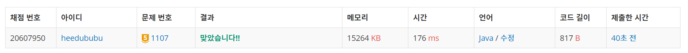

문제
https://www.acmicpc.net/problem/1107
( ᐛ )و 도전
1. 설계
- n의 범위가 주어졌기 때문에 brute force로 모든 경우를 확인하여 최솟값을 출력한다.
2. 구현 (성공 코드)
1
2
3
4
5
6
7
8
9
10
11
12
13
14
15
16
17
18
19
20
21
22
23
24
25
26
27
28
29
30
31
32
33
34
35
36
37
38
39
40
41
42
43
44
45
import java.util.ArrayList;
import java.util.Scanner;
/**
* @author HEESOO
*
*/
public class Main {
static ArrayList<Integer> list;
public static int checkNum(int num) {
int length=0;
if(num==0) {
if(list.contains(0)) return 0;
else return 1;
}
while(num>0) {
if(list.contains(num%10)) return 0;
else {
length++;
num/=10;
}
}
return length;
}
public static void main(String[] args) {
// TODO Auto-generated method stub
Scanner scan=new Scanner(System.in);
int n=scan.nextInt();
int m=scan.nextInt();
list=new ArrayList<>();
for(int i=0;i<m;i++)
list.add(scan.nextInt());
int min=Math.abs(n-100);//100에서 n까지 +/-만으로 이동하는 방법
for(int i=0;i<1000000;i++) {
int cnt=checkNum(i);//i를 버튼으로 만들 수 있는지 체크
if(cnt!=0)
min=Math.min(min, Math.abs(n-i)+cnt);
}
System.out.println(min);
}
}
3. 결과
 성공٩(˘◊˘)۶
4. 설명
- 채널 n에 도달하는 방법을 생각해본다
- 숫자 버튼으로 바로 n을 만들 수 있는 경우(방법 1)
- +/-만을 이용하여 n에 도달하는 경우(방법 2)
- 위 두 가지를 모두 이용하는 경우(방법 3)
- Brute Force로 모든 경우를 탐색한다
- 버튼이 고장난 m개의 숫자를 ArrayList에 저장한다. 배열에도 저장할 수 있지만, 고장난 버튼의 유무를 체크해야하므로 배열보다는 ArrayList의 contains()를 쓰는 것이 더 편리하다.
- min에 방법 2를 저장한다. 시작점이 100이므로 n-100이다. 이때 n>=100이라면 n-100이지만 n<100이면 음수가 발생하므로 Math.abs()로 절댓값 처리해준다.
- for문을 돌려 숫자 버튼으로 만들 수 있는 모든 채널을 생성한다. 이때 n은 0~500000이지만, n>i인 경우와 n< i인 경우 두 개를 생각해야하므로 n의 두 배를 한다.
- checkNum()을 통해 고장난 버튼을 확인하여 버튼을 만들 수 있는 지 확인한다.
- checkNum()으로 채널 num 생성이 가능한지 확인한다
- 나머지 연산을 이용하여 숫자를 하나씩 쪼개어 해당 숫자 버튼이 고장나진 않았는지 확인한다.
- 이때 채널이 0일 경우, 0은 나머지 연산이 불가능하므로 따로 빼서 처리해준다.
- num의 숫자들 중 하나라도 고장난 버튼이 있다면, 만들 수 없으므로 0을 리턴하고, 아닌 경우 버튼 생성을 위해 필요한 클릭 횟수(length)를 리턴한다.
- 채널 i생성이 가능하다면 방법2와 방법1 또는 3중 최솟값을 택한다
- 현재 min은 방법2의 답을 가지고 있고, 나머지 1 또는 3중 작은 방법을 택한다.
- cnt는 채널 i로 방법1의 횟수이고, Math.abs(n-i)는 방법3을 체크하는 것이다.
- i==n이라면 Math.abs(n-i)=0이 되어 확인할 필요가 없지만(방법1),
- 아닐 경우, 채널 i로 숫자 버튼을 조작해 이동하는 횟수 cnt, i에서 n까지 +/-을 이용하여 움직이는 횟수를 더한 값이 된다(방법3).
해결 완료!
참고
- BruteForceSearch 백준 알고리즘 자바 1107 ‘리모컨’ 문제풀이 https://geehye.github.io/baekjoon-1107/#